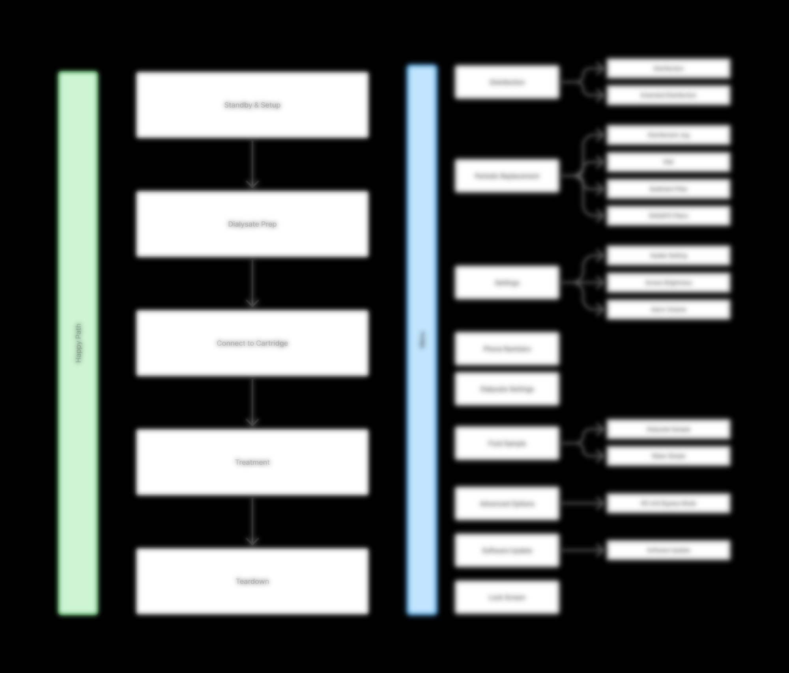
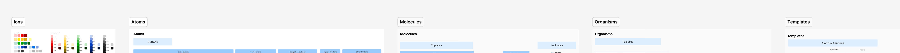

The Challenge
This wasn't a UI refresh. It was an ecosystem problem.
The new on-demand dialysate generator would sit directly beside an existing, FDA-cleared treatment device that patients and nurses already knew how to use. If the generator felt foreign, trust would erode. If it felt identical, clinicians couldn't distinguish a supply alarm from a patient safety event. The design had to solve both problems simultaneously — and whatever it produced had to scale across future products.
"The goal wasn't to design a new device. It was to design a device that felt like it had always belonged next to the one they already trusted."
Problem Definition
Three compounding failure modes in a high-stakes clinical environment
Problem 01
60L Production Cap
Mid-treatment fluid shortfalls could interrupt active dialysis therapy — a direct patient safety risk with no in-system solution.
Problem 02
Undifferentiated Alarm Cascade
Every alarm — from a low concentrate supply to a critical patient event — used identical visual and auditory treatment. The result: alarm fatigue and erosion of clinical trust.
Problem 03
Fragmented Ecosystem
No design relationship between the generator and the primary treatment device. Two devices meant two mental models — and extended training requirements for every new clinician.
The core design tension: the new device needed to feel like a native extension of the existing ecosystem — reducing the learning curve to zero — while behaving differently enough that clinicians could never confuse a supply alarm with a patient safety emergency.
Research & Discovery
15 participants. Two user groups. Two insights that defined everything.
I led a usability-centered research program with 10 in-center nephrology nurses and 5 home patients — running moderated usability sessions iteratively from early prototypes through summative validation, supplemented by contextual inquiry and interviews.
"Everything is an alarm. Low fluid sounds the same as a critical patient issue. After a while, you start tuning out."
— Nephrology Nurse, 15 years experience"The cycler guides me through everything. I wish this device had that same feel — I already know how to use that."
— Home Patient, 6 years on dialysisThese two insights locked the strategy: the alarm hierarchy had to map to actual clinical risk levels, and the interface had to leverage the mental models users had already built with the primary treatment device. Two problems. One design framework.
Systems Thinking
Designing for an ecosystem, not just a screen
Before designing a single screen, I conducted a systematic visual audit of the primary treatment device — deconstructing its interface element by element to build a principled framework for what to standardize versus what to deliberately differentiate. This wasn't aesthetic. It was the strategic foundation the entire design was built on.
Information Architecture — Happy Path & Menu Structure

The IA defined the treatment workflow as a linear five-phase happy path, with a parallel menu structure handling maintenance, settings, and advanced options. This separation — guided linear flow vs. non-linear menu access — was a core structural decision that influenced every screen design.
The Consistent Layer: Visual DNA
Seven elements carried forward exactly — creating immediate ecosystem recognition the moment a user encountered the new device.
| UI Element | Treatment Device Pattern | Generator Application |
|---|---|---|
| Typography | Open Sans | Maintained exactly |
| Iconography | 2px line weight | Maintained exactly |
| Primary Blue | Hex #003EC3 | Maintained exactly |
| Button Style | Circle, outline | Maintained exactly |
| Layout Grid | 8px baseline | Maintained exactly |
| Instruction Style | Step-by-step illustrations | Maintained exactly |
| Alert Placement | Top banner | Maintained exactly |
The Differentiated Layer: Risk-Based Alarm Hierarchy
The critical innovation: a three-tier alarm hierarchy aligned with IEC 60601-1-8, using both visual and auditory differentiation so nurses could identify device source and urgency level — often without looking up from a patient.
High Risk — Dialysis Cycler (Treatment Device)
Immediate Patient Safety
Red screen, flashing, urgent tone. The generator never uses red — red means the patient, always. This rule is absolute and non-negotiable across the entire product family.
Medium Risk — Generator (Supply Device)
Treatment Disruption Risk
Yellow banner, distinct lower-frequency tone differentiated from the treatment device by pitch. Nurses identify the source by sound alone. Intervention required within 5–30 minutes.
Low Risk — Generator (Supply Device)
Informational
Green banner, gentle chime. Confirms the system is working as expected. No urgency, no action required — and no contribution to alarm fatigue.
The scalability decision: the alarm hierarchy and visual DNA framework were documented as reusable standards — not project-specific solutions. They now form the design foundation for three future Home Hemodialysis products, reducing estimated design and development time on those products by 40%.
Atomic Design System — Ions & Atoms Layer (excerpt)

The design system was structured across five atomic tiers: Ions (color, type, iconography tokens) → Atoms (buttons, icons, indicators) → Molecules (alarm states, content zones) → Organisms (full screen layouts) → Templates (complete flow screens). The system is now shared across the Home Hemodialysis product family. Screen-level designs omitted under NDA — this excerpt shows the foundational token and component layers only.
Design Execution
Two screens. Every interaction pattern borrowed, never invented.
Screen 01
Guidance Screen — Familiar Mental Models Applied
Step-by-step illustrated instructions with numbered steps and a "Guide Me" button identical in behavior to the primary device. Users arrive already knowing how to use it — the design work happened upstream, not in the UI.
- Zero new behaviors required from nurses or home patients.
- Display size discrepancy (5" vs. 8") documented as a known constraint and flagged for the Phase 2 roadmap.
Screen 02
Alarm State — Medium Acuity
Yellow banner, distinct tone, affected area highlighted in context. A direct link surfaces the resolution steps inline — no navigation, no hunting, no menus.
- Nurses identify source by pitch before they look up.
- Yellow signals "important, not life-threatening" with no ambiguity.
Cross-Functional Negotiation
When engineering constraints threatened the safety case
Engineering initially proposed reusing existing alarm codes to reduce development time — a reasonable ask that would have collapsed the risk-based hierarchy we'd validated with users. I brought user research data directly into the conversation alongside Human Factors and Systems Engineers, and we reached a workable compromise: revise and reprioritize the existing alarm framework by clinical risk rather than rebuild from scratch.
User research gave us the standing to negotiate, not just advocate. Data, not preference, is what moves cross-functional decisions in regulated environments.
Outcomes
Measurable safety gains and a system that scales
Alarm Accuracy
Up from 58% with the legacy system — a 42-point improvement in identifying alarm source and urgency.
Faster Resolution
Fluid alarm resolution: 85 seconds → 51 seconds. Time that matters during active clinical treatment.
Design Fidelity
Engineering implementation matched specification — a direct result of sprint-aligned mid-development communication.
"The yellow caution means I have time. The red alarm means drop everything. That distinction matters."
— Nephrology Nurse, summative usability testing"It looks like it belongs with my cycler."
— Nephrology Nurse, summative usability testingRetrospective
What I'd do differently
Earlier Engineering Engagement
Closer engineering involvement from the start would have surfaced processing constraints sooner, preventing design assumptions that required deferral to Phase 2.
Dedicated Home Patient Sessions Earlier
Home patients had distinct needs that surfaced later than ideal. Running dedicated cohorts earlier — not combined with clinical staff — would have sharpened the IA and alarm design from the beginning.
Longitudinal Validation
Summative testing captured initial reactions but not long-term adoption. A follow-up study at 6–12 months would validate whether alarm fatigue reduction holds over time — data that's both clinically meaningful and commercially valuable.
Why This Work Matters
Designing for people who don't get to opt out.
The most meaningful feedback I received wasn't a metric. It was a nurse saying: "The yellow caution means I have time. The red alarm means drop everything." That distinction — intentionally built into the system — is the difference between a tool that works and one that erodes trust over time. What I find most engaging about this kind of work is that decisions made carefully on one product now shape how an entire product family behaves. That's what senior design looks like to me: not just solving the problem in front of you, but building the foundation that makes the next problem easier to solve well.